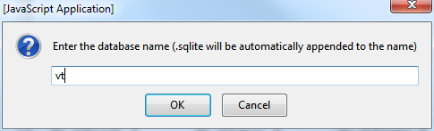
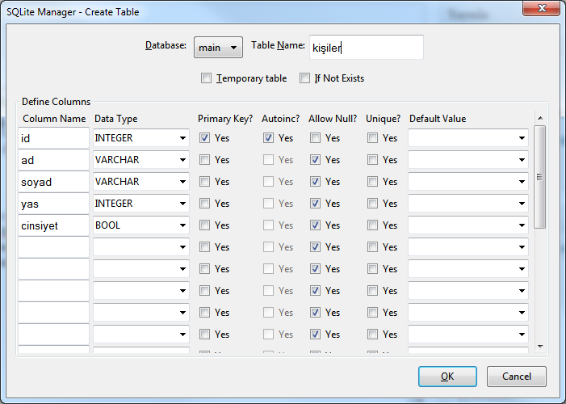
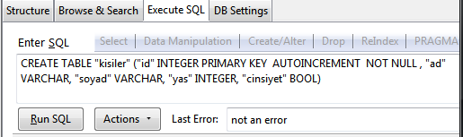
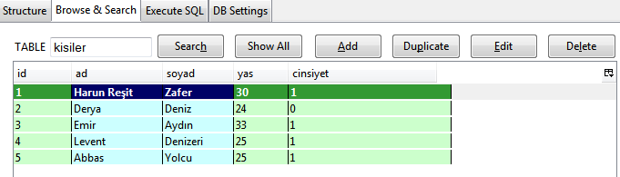

Java ve SQLite: Örnek Veritabanı Uygulaması – 4

Bundan önceki üç makale MySql veritabanı kullanan küçük masaüstü uygulamalarıydı. Ancak MySql aslında masaüstü uygulamalarında kullanılmak için tasarlanmış bir veritabanı yönetim sistemi değil. Daha çok web ve dağıtık uygulamalar için kullanılan bir çözüm. Bu nedenle veritabanı bir sunucu üzerinden hizmet veriyor ve veritabanını kullanacak olan tüm uygulamalar veriye bu sunucu üzerinden ulaşıyor. Bir masaüstü uygulamasının ihtiyaç duyacağı yerel bilgileri MySql veritabanı kullanarak sakladığımızda, o uygulamayı kuracağımız her bilgisayara bir de mysql sunucu kurmamız, hatta veritabanını da sunucuda yeniden oluşturmamız gerekiyor. Sözün kısası uzun zamandır bu problemle ilgili sorular geliyordu ve çözüm olarak Sqlite’i öneriyordum. Bu yazıda bu önerimi örnek bir uygulama ile pekiştireceğim. Bu arada Sqlite veritabanını kullanan uygulama ve işletim sistemlerinden bazılarının Firefox, Opera, Chrome, Skype, Dropbox, Windows Phone 8, Apple iOS, Symbian Os, Google Android vs. olduğunu hatırlatalım.
Bu yazıda ayrıntılı bir anlatım yapmak yerine kısaca önceki makalelerde yaptığımız çalışmayı SQLite’e uyarladım. Çünkü önceki makaleler yeterince ayrıntılı. Bu uyarlamayı Netbeans projesi olarak yazının sonundaki bağlantıdan indirebilirsiniz. Java ve veritabanı konusunda hiç tecrübeniz yoksa önce ilk üç makaleyi çalışmanızı tavsiye ederim.
1- SQLite veritabanı oluşturma**
Öncelikle yapmamız gereken kullanacağımız veritabanını tasarlamak ve oluşturmak olacak. Bunun için de bize bir SQLite yönetici uygulaması gerekiyor. Bu uygulama bizlere yeni veritabanı oluşturma, tablo ekleme/silme/güncelleme gibi işlemleri rahatça yapabileceğimiz bir arayüz sunmalı. Mysql için PhpMyAdmin, MySQL manager gibi bir çok benzer uygulama mevcuttu hatırlarsanız. Google’da “sqlite manager” şeklinde bir arama yaptığınızda pek çok sonuç çıkıyor. Bunları tek tek incelemeye vaktim olmadı. Ancak ilk sırada gelen ve bir Firefox eklentisi olan Firefox Sqlite Manager‘ın son derece kullanışlı ve yeterli olduğunu söyleyebilirim. Tek dezavantajı Firefox ile birlikte kullanmanız gerektiği.
Yeni veritabanımızı oluşturalım. Bu veritabanı “kisiler” isminde tek bir tablo içerecek:
- Menüden Database->New database seçeneğini tıklayın.
- Açılan pencerede yeni veritabanının ismini girin, sonuna sqlite uzantısı otomatik olarak eklenecektir.

- Veritabanına tablo eklemek için, sol paneldeki “tables” üzerine sağ tıklayıp “create table” seçeneğine tıklayın. Açılan pencerede tablo alanlarını aşağıdaki gibi oluşturun.

- Alternatif olarak soldaki sekmelerden “Execute SQL” ismindekini seçip, tabloyu aşağıdaki SQL sorgusunu çalıştırarak oluşturabilirsiniz.
CREATE TABLE "kisiler" ("id" INTEGER PRIMARY KEY AUTOINCREMENT NOT NULL , "ad" VARCHAR, "soyad" VARCHAR, "yas" INTEGER, "cinsiyet" BOOL)
- Oluşturulan tabloya kayıt girişi de aynı şekilde el ile veya SQL sorgusu çalıştırarak olabilir. El ile girişi “Browse & Search” isimli sekmeden “Add” butonuna tıklayarak yapabilirsiniz. Kayıtlar eklendikten sonra görünüm aşağıdakine benzer olacaktır.

- Kayıtları aşağıdaki sorguyu çalıştırarak da girebilirsiniz. Bunu yukarıda yaptığımız gibi “Execute SQL” sekmesinden yapabilirsiniz.
INSERT INTO "kisiler" VALUES(1,'Harun Reşit','Zafer',30,1);
INSERT INTO "kisiler" VALUES(2,'Derya','Deniz',24,0);
INSERT INTO "kisiler" VALUES(3,'Emir','Aydın',33,1);
INSERT INTO "kisiler" VALUES(4,'Levent','Denizeri',25,1);
INSERT INTO "kisiler" VALUES(5,'Abbas','Yolcu',25,1);2- Java ile veritabanına bağlantı
Hatırlarsanız Java ile MySQL’e bağlanırken projemize “MySQL JDBC Driver” isimli kütüphaneyi eklememiz gerekiyordu. Aynı şekilde SQLite için de çeşitli JDBC sürücüleri mevcut. Ancak MySQL sürücüsü Netbeans ile birlikte hazır bir kütüphane olarak geliyor ve projeye eklenmesi daha kolay. SQLite için ise ilgili jar dosyasını indirip projemize eklememiz gerekecek. Aşağıdaki bağlantılardan sürücüyü, kaynak kodlarını ve döküman kodlarını indirebilirsiniz.
Netbeans projenizin ana dizinine “db” ve “lib” isimli iki yeni klasör açmanızı ve jar dosyalarını “lib” klasörünün içerisine, “vt.sqlite” ya da benzer isimli veritabanı dosyanızı da “db” isimli klasörün altına kopyalamanızı öneririm.
Veritabanına bağlantı parametreleri ise aşağıdaki gibi olacaktır.
private Connection conn = null; //Bağlantı nesnemiz
private String url = "jdbc:sqlite";//veritabanının adresi ve portu
private String dbName = ":db/vt.sqlite"; //veritabanının dosya yolu
private String driver = "org.sqlite.JDBC";//SQLite ile Java arasındaki bağlantıyı sağlayan JDBC sürücüsüHerkese kolay gelsin
İlgili Yazılar
- Netbeans, Java, MySQL: Örnek Veritabanı Uygulaması – 1
- Netbeans, Java, MySQL: Örnek Veritabanı Uygulaması – 2
- Netbeans, Java, MySQL: Örnek Veritabanı Uygulaması – 3
17 Eylül 2012 Pazartesi tarihinde yayınlandı.